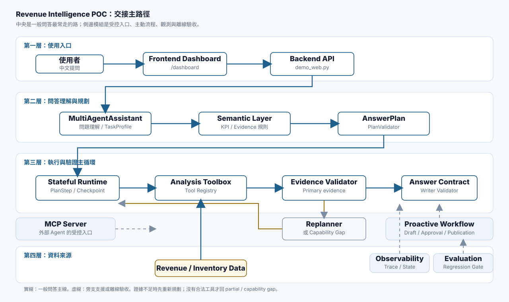
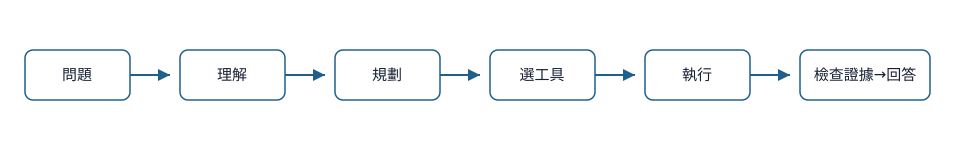
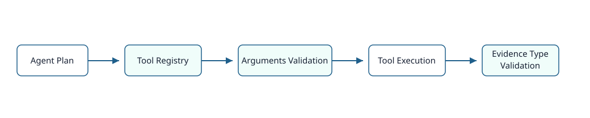
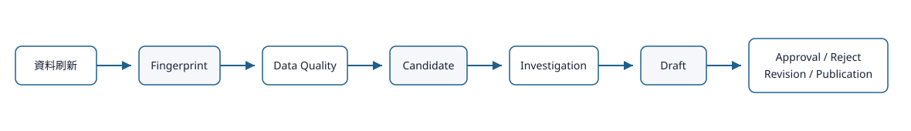

真正的主架構圖
先看中央主線：使用者從 Dashboard 提問，後端把問題交給 Agent，Agent 用受控的分析工具（Tool）取得回答證據（Evidence），最後才產生回答。
這張圖只畫交接最需要理解的主路徑；其他像 MCP、Observability、Evaluation 都是旁支支援模組，不是每次問答都會完整經過。

工程細節：如何讀這張圖
- 實線是 Dashboard 問答最常走的 runtime 主線。
- 虛線是 MCP、Proactive、Observability、Evaluation 這類旁支或離線支援。
- 資料只供給 Analysis Toolbox；Agent 不直接讀任意檔案。
- Evidence Validator 不通過時，才會進入 Replanner 或產生 capability gap。
問答小流程圖
這張圖適合現場口頭說明：問題先被理解，再規劃、選工具、執行、檢查證據，最後回答。

Tool 安全邊界圖
Agent 不能任意執行 Python、SQL 或 shell。它只能提出 Tool Call，並通過 Tool Registry 與參數驗證。

Proactive Workflow 圖
主動洞察是另一條流程：資料刷新後產生草稿，但草稿不會自動發布，必須經人工核准。

程式模組地圖
以下只列新人最需要先認得的入口與核心實作；完整檔案搜尋放在附錄。
Frontend
Dashboard 與靜態交接網站的使用者入口，負責把問題送到後端並呈現回答。
上游：使用者瀏覽器。
下游：Backend API。
常見錯誤：常見是 API base URL、Next 靜態資源或 dev server 快取問題。
focused tests：frontend npm run buildHTTP /dashboard
Backend / Orchestration
接住前端問題，載入資料管線，交給 MultiAgentAssistant 產生可驗證回答。
上游：Frontend API route 或直接 HTTP request。
下游：Agent Runtime、Analysis Toolbox、health endpoint。
常見錯誤：資料檔案缺漏、pipeline 尚未載入、planner 環境變數未開。
focused tests：tests/test_phase9b_demo_readiness.pytests/test_real_data_contract.py
Agent Runtime
把計畫拆成可追蹤步驟，執行工具、保存狀態，並在證據不足時處理重新規劃。
上游：MultiAgentAssistant 與 AnswerPlan。
下游：Tool Registry、Evidence Validator、Writer Validator。
常見錯誤：plan step 不合法、primary evidence 不足、state checkpoint 無法寫入。
focused tests：tests/test_agent_runtime.pytests/test_evidence_validator.pytests/test_agent_replanner.py
Semantic Layer
定義 KPI、維度與每種問題需要哪些回答證據，讓 Agent 不用猜規則。
上游：TaskProfile / CanonicalTaskProfile。
下游：AnswerPlan、Plan Validator、Evidence Validator。
常見錯誤：metric id 拼錯、維度不相容、task evidence 沒補齊。
focused tests：tests/test_semantic_catalog.pytests/test_semantic_validation.py
Analysis Tools
真正讀取正規化資料並做受控計算；Agent 只能呼叫登記過的工具。
上游：Stateful Runtime 或 MCP Server。
下游：Revenue / Inventory Data、Evidence Validator。
常見錯誤：allowed arguments 不一致、supported metrics 未列、回傳不是 JSON-safe。
focused tests：tests/test_tool_registry.pytests/test_analysis_tools.pytests/test_plan_validator.py
MCP Server
讓外部 Agent 走受控入口查詢少數 read-only 工具，不是一般 Dashboard 問答必經路徑。
上游：外部 MCP client。
下游：MCP allowlist、Tool Registry、AnalysisToolbox。
常見錯誤：hidden tool 被拒絕、參數未通過 schema、row cap 截斷。
focused tests：tests/test_mcp_server_integration.pytests/test_mcp_security.py
Proactive Workflow
資料刷新後產生待審查洞察草稿，經人工核准後才可發布。
上游：資料 fingerprint 與 quality report。
下游：Draft、Approval、Publication artifact。
常見錯誤：品質警告未審、hash chain 不符、未核准就嘗試發布。
focused tests：tests/test_proactive_workflow.pytests/test_publication_execution_adapter.py
Observability
保存 trace、state 與健康檢查線索，讓排錯能回到具體步驟。
上游：Runtime、Backend、Evaluation。
下游：Trace store、health response、evaluation artifact。
常見錯誤：trace 沒寫入、state 與 request id 對不起來、健康狀態警告未解讀。
focused tests：tests/test_trace_store.pytests/test_status_apis.py
Evaluation
用可重跑的測試題與門檻確認回答、工具使用與安全拒絕沒有退化。
上游：正式服務或 execution-backed adapter。
下游：Scorecard、Regression Gate。
常見錯誤：artifact 路徑不對、suite case 未更新、gate threshold 未通過。
focused tests：uv run python -m evaluation.run_evaluation --helptests/test_regression_gate.py
核心檔案
這些檔案足以串起 Demo、問答主流程、Tool 安全邊界與驗收流程。
| 檔案 | 交接時要知道什麼 | 相關測試 |
|---|---|---|
README.md | 專案總覽與正式啟動方式，先確認資料來源、服務入口與交接網站路徑。 | 未限制 |
demo_web.py | Python Backend/API 入口，建立共用分析環境，接 Dashboard 問答、圖表、health 與主動流程 API。 | tests/test_proactive_api.pytests/test_status_apis.py |
analysis_pipeline.py | 把資料讀取、清理、正規化與分析表建立成 PipelineContext，供所有工具共用。 | 未限制 |
real_data.py | 定義真實 Excel 資料的讀取、欄位檢查、月份與實體對齊規則。 | tests/test_analysis_tools.pytests/test_answer_contract.pytests/test_data_loader.py |
data_loader.py | 低階資料載入與欄位標準化 helper，避免各工具各自讀 Excel。 | tests/test_data_loader.py |
task_profile.py | 把中文問題歸類成 task family，抽出時間、KPI、實體與回答需求。 | tests/test_agentic_acceptance_requirements.pytests/test_analysis_rubrics.pytests/test_answer_contract.py |
canonical_task.py | 把 TaskProfile 整理成穩定 schema，保留月份、實體、KPI 與 semantic reference。 | tests/test_agent_replanner.pytests/test_agent_runtime.pytests/test_agent_runtime_models.py |
multi_agent.py | Agent orchestration 主體，負責理解問題、規劃工具、執行分析與組裝回答。 | tests/test_analysis_rubrics.pytests/test_complex_relationship_planning.pytests/test_phase9a3_frontend_chart.py |
tool_registry.py | 所有正式 ToolContract 的登記處，定義工具參數、支援 KPI、evidence type 與 MCP exposure。 | tests/test_llm_planner.pytests/test_llm_planner_registry.pytests/test_mcp_execution_adapter.py |
analysis_tools.py | 受控分析工具的實作位置，所有營收、庫存、排名、趨勢與圖表計算都從這裡出來。 | tests/test_analysis_tools.pytests/test_complex_relationship_planning.pytests/test_phase10d_entity_ui_chart.py |
agent_runtime/runtime.py | 可 checkpoint 的執行迴圈，依序跑工具、收 evidence、驗證、不足時 replan。 | tests/test_agent_replanner.pytests/test_agent_runtime.pytests/test_agent_runtime_compatibility.py |
agent_runtime/evidence_validator.py | 檢查回答證據是否真的涵蓋 KPI、月份、實體、rows 與 semantic requirement。 | tests/test_complex_relationship_planning.pytests/test_evidence_validator.pytests/test_phase1_acceptance_runtime.py |
agent_runtime/replanner.py | 保守補證工具，只能新增 registry 允許且未重複的合法工具呼叫。 | tests/test_agent_replanner.pytests/test_agent_runtime.pytests/test_complex_relationship_planning.py |
semantic_layer/catalog.py | 載入 KPI、dimension、task evidence 與 data contract 定義，提供查詢與驗證入口。 | tests/test_candidate_detector_semantics.pytests/test_mcp_tools.pytests/test_phase2_acceptance.py |
proactive_workflow/approval.py | 人工核准流程，檢查 approver、draft hash、狀態衝突與 revision/reject 條件。 | tests/test_approval_execution_adapter.pytests/test_approval_identity.pytests/test_approval_safety_grader.py |
proactive_workflow/publisher.py | 發布 gate，只有 approved draft 且 hash 一致時才寫出正式 publication artifacts。 | tests/test_proactive_revision.pytests/test_proactive_workflow.pytests/test_publication_execution_adapter.py |
observability/tracing.py | TraceRecorder 實作，讓 agent、tool、MCP、approval、publication 產生 span。 | tests/test_answer_plan_instrumentation.pytests/test_runtime_instrumentation.pytests/test_semantic_instrumentation.py |
evaluation/policies/regression_gate.v1.json | 交付前 gate policy，定義 execution-backed、trace、安全與 publication 門檻。 | tests/test_phase4c_acceptance.py |